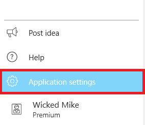
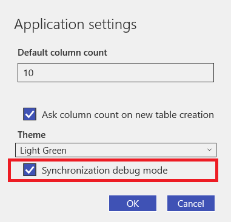
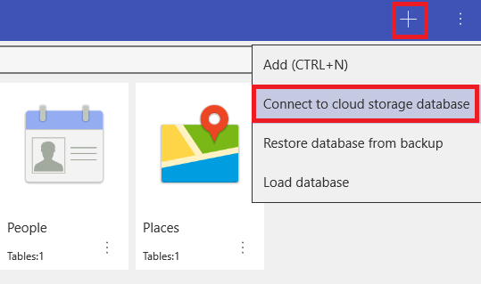
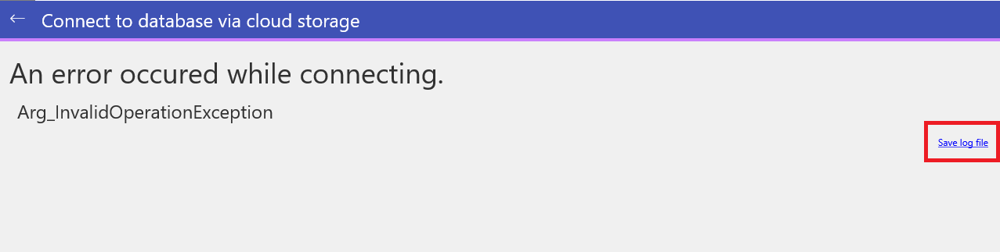

Synchronization troubleshooting
In order to help troubleshoot cloud synchronization problems we introduced the debugging option that can be activated through application settings.
In case you face cloud sync issues on your Windows or Android device, the following steps should be performed:
1) Run MobiDB and select 'Application settings' option from the drawer panel.

2) Enable the 'Synchronization debug mode' by tapping on the checkbox next to the option and press 'OK' to confirm.

3) Select 'Connect to cloud storage database' option to initiate cloud sync.

4) In case the sync process is interrupted by the error message, locate the 'Save log file' button on the screen and press it to save the debug information.

The file with the debug information should be sent to support@perpetuumsoft.com in case it was requested by technical support service. Please note, you should deactivate 'Synchronization debug mode' after you finish troubleshooting the problem, since it can noticeably impact the application performance during the cloud synchronization.